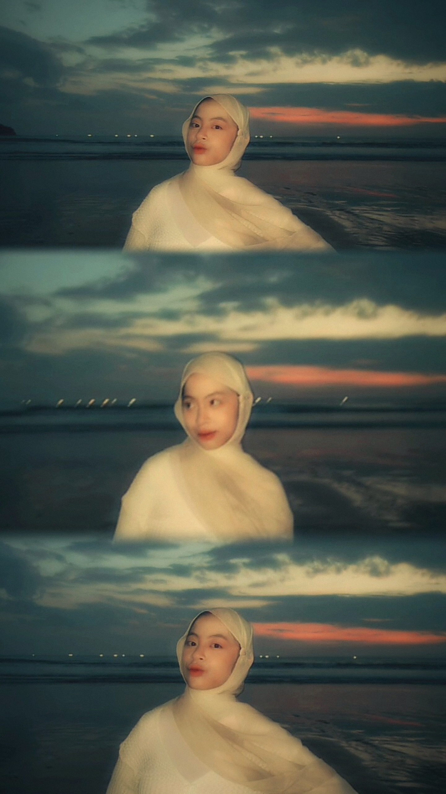

Hi, I'm Triyana 👋
Welcome to Polyglot Corner!
Aku suka belajar bahasa asing, dan makin lama aku sadar: setiap bahasa membawa cerita tentang budaya, makanan, dan cara orang memandang dunia. Website ini adalah pojok kecilku untuk berbagi semua itu.
Apa itu Polyglot Corner?
Polyglot (poliglot) = orang yang bisa atau suka belajar banyak bahasa. Asalnya dari bahasa Yunani: poly = banyak, glotta = bahasa/lidah. Corner = sudut atau pojok. Di sini maksudnya "tempat kecil yang nyaman" untuk belajar.
Kenapa Polyglot Corner?

Ketertarikan saya terhadap dunia asing sebenarnya sudah dimulai sejak kecil. Berawal dari kakak pertama saya yang memperkenalkan berbagai hal tentang dunia Bollywood dan Hollywood, mulai dari musik hingga film. Sementara itu, ketertarikan saya terhadap film-film Hollywood juga semakin berkembang berkat pengaruh sepupu saya.
Sejak kecil, saya sudah terbiasa mendengarkan musik berbahasa Inggris dan mengenal berbagai hiburan dari luar negeri. Tanpa disadari, hal-hal sederhana tersebut perlahan menumbuhkan rasa penasaran saya terhadap bahasa, budaya, dan kehidupan dari berbagai negara.
Seiring berjalannya waktu, rasa penasaran itu berkembang menjadi ketertarikan untuk mempelajari bahasa asing. Bagi saya, mempelajari bahasa bukan hanya tentang menghafal kosakata atau memahami tata bahasa, tetapi juga menjadi salah satu cara untuk mengenal budaya, kebiasaan, dan sudut pandang baru dari berbagai belahan dunia.
Dari perjalanan itulah Polyglot Corner hadir. Saya ingin menjadikan website ini sebagai ruang untuk berbagi ketertarikan, pengetahuan, dan hal-hal menarik seputar bahasa serta budaya asing.
Because every language opens a new world.
 Korea
Korea
 India
India
 Rusia
Rusia
 Spanyol
Spanyol
Punya saran, pertanyaan, atau mau ngobrol soal bahasa? Hubungi aku lewat sini atau kirim pesan lewat form di bawah.
Instagram @zhe_shitriyanaa Gmail triyanawadiahambali@gmail.com